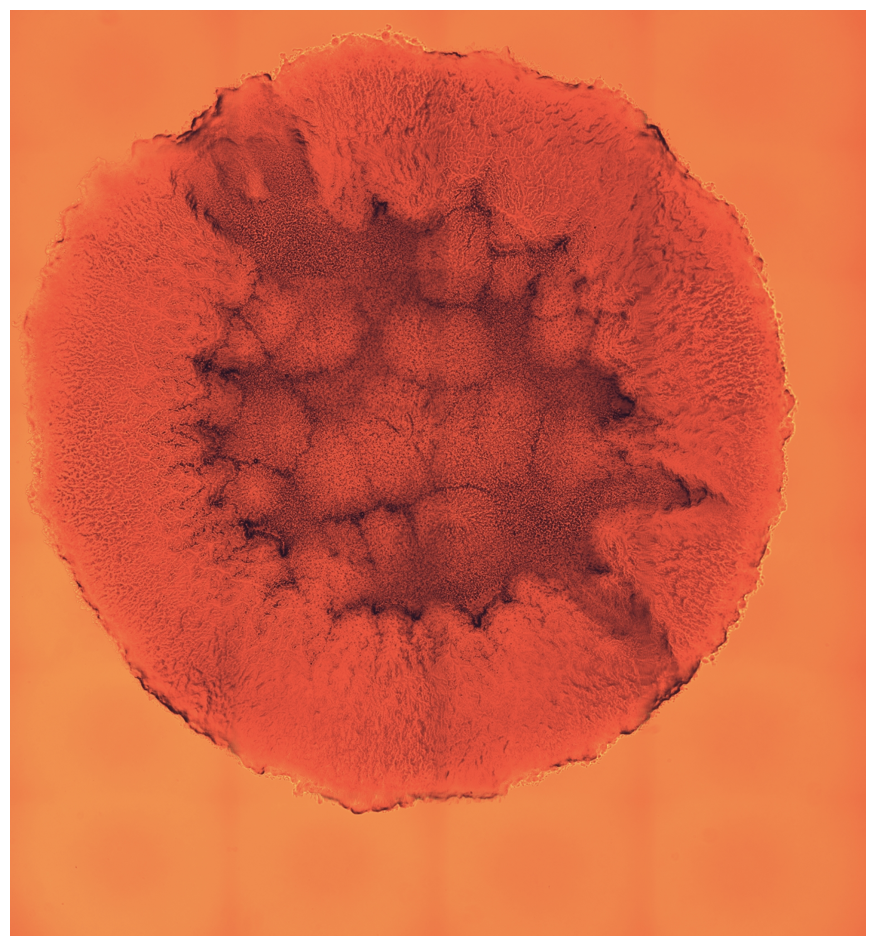
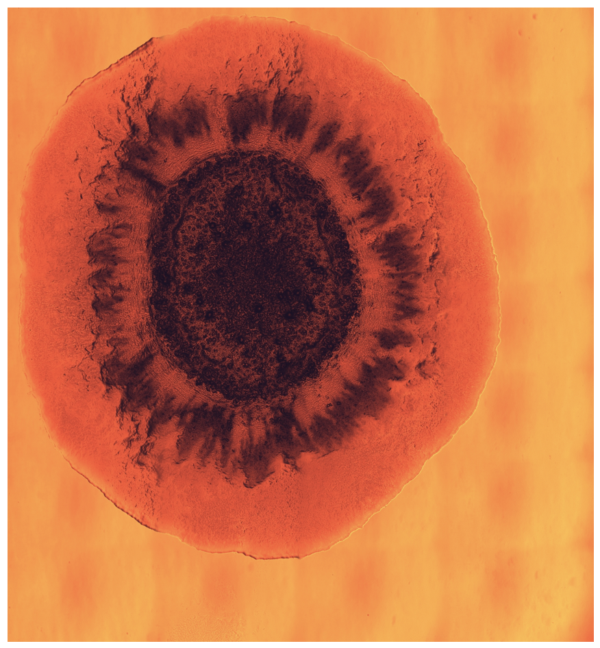
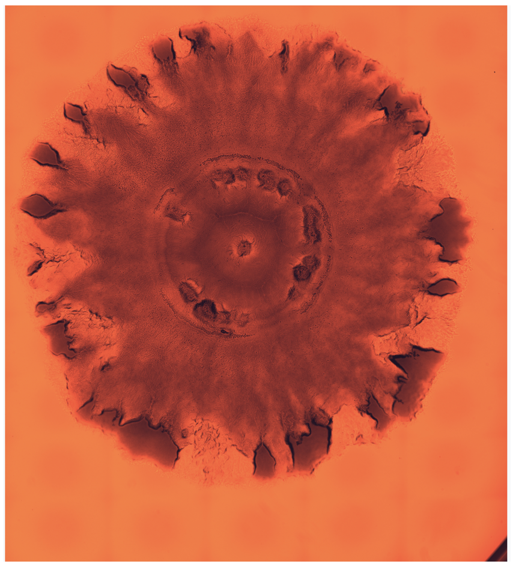

Over-prescription of antibiotics, treatment truncation, and antibiotics overuse in livestock and fish farming, have produced an antibiotic resistance crisis. One of the main reasons for over-prescription is the lack of knowledge about the bacteria strain present in the infection, and its sensitivity to available antibiotics. Consequently, treatment can be wrongly chosen, resulting in an ineffective procedure that leads to antibiotic resistance. Knowing the strain and antibiotic sensitivity of a bacterial infection can improve treatment strategies which can further alleviate the evolution of widespread antibiotic resistance.
With modern techniques one can grow entire bacteria colonies on hard agar surfaces, and photograph their morphologies in great detail, which in turn reflects differences in gene content and expression among different strains of the same bacterium. For instance, here are images of three Pseudomonas Aeruginosa strains:
|  |  |  |
|---|
Our work investigates computer vision and machine learning techniques that can automatically phenotype these images to help predict antibiotic sensitivity and determine further treatment strategies. The main challenge here is the limited amount of samples, which complicates training and requires data augmentation techniques.